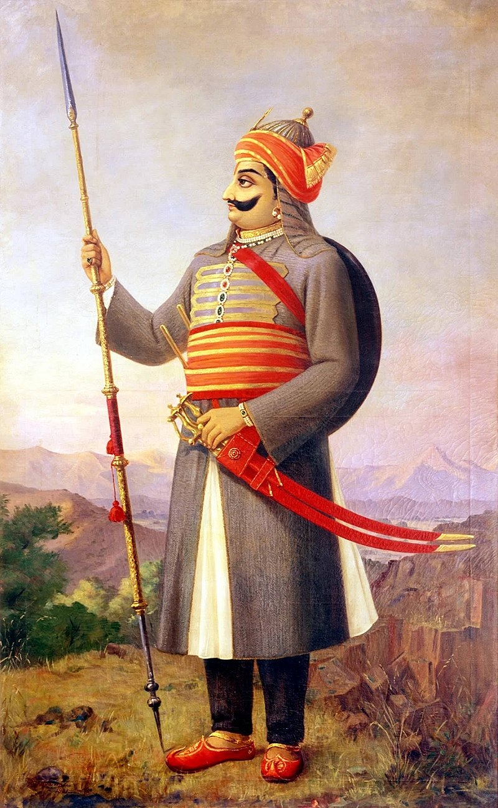
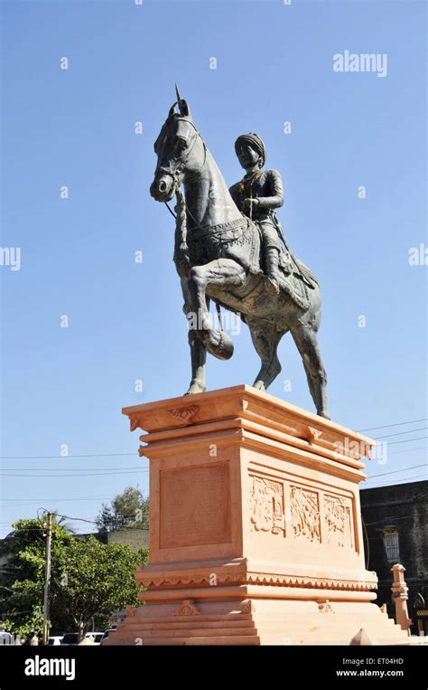
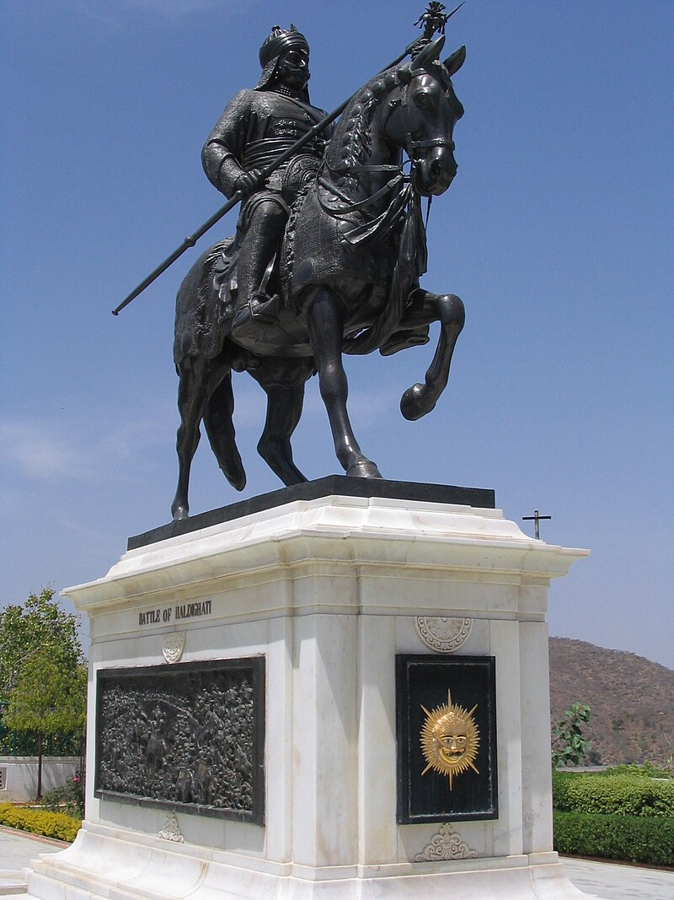
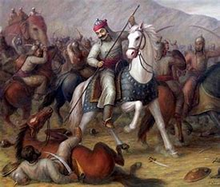

Maharana Pratap

Pratap Singh I (c. 9 May 1540 – 19 January 1597), popularly known as Maharana Pratap (IPA: [məɦaːˈɾaːɳaː pɾəˈtaːp] ⓘ), was a king of Kingdom of Mewar, in north-western India in the present-day state of Rajasthan. He is notable for leading the Rajput resistance against the expansionist policy of the Mughal Emperor Akbar including the Battle of Haldighati and the Battle of Dewair.
Early life and accession
Maharana Pratap was born to Udai Singh II of Mewar and Jaiwanta Bai in 1540,
the year in which Udai Singh ascended to the throne after defeating Vanvir Singh.[5][6][7] His younger brothers were Shakti
Singh, Vikram Singh and Jagmal Singh. Pratap also had two stepsisters: Chand Kanwar and Man Kanwar. His chief consort was
Ajabde Bai Punwar of Bijolia.[8] Their eldest son was Amar Singh I.[9] He belonged to the royal family of Mewar.[10] After
the death of Udai Singh in 1572, Rani Dheer Bai Bhatiyani wanted her son Jagmal to succeed him[11] but senior courtiers
preferred Pratap, as the eldest son, to be their king. The desire of the nobles prevailed and Pratap ascended the throne as
Maharana Pratap, the 54th ruler of Mewar in the line of the Sisodia Rajputs.[12] He was crowned in Gogunda on the auspicious
day of Holi. Jagmal swore revenge and left for Ajmer, to join the armies of Akbar, and obtained the town of Jahazpur as a
Jagir as a gift in return for his help

Military career
Background
Pratap Singh, gained distinction for his refusal to form any political alliance with the Mughal Empire
and his resistance to Mughal domination. The conflicts between Pratap Singh and Akbar led to the Battle of Haldighati

Battle of Haldighati
The Siege of Chittorgarh in 1567-1568 had led to the loss of the fertile eastern belt
of Mewar to the Mughals. However, the rest of the wooded and hilly kingdom in the Aravalli range was still under the
control of Maharana Pratap. Mughal Emperor Akbar was intent on securing a stable route to Gujarat through Mewar;
when Pratap Singh was crowned king (Maharana) in 1572, Akbar sent a number of envoys, including one by Raja Man
Singh I of Amer, entreating him to become a vassal like many other rulers in Rajputana. When Pratap refused to
personally submit to Akbar and several attempts to diplomatically settle the issue failed, war became inevitable.[16][17]
The forces of Pratap Singh and Mughal and Rajput general Man Singh met on 18 June 1576 beyond
a narrow mountain pass at Haldighati near Gogunda, modern day Rajsamand in Rajasthan. This came to
be known as the Battle of Haldighati. Pratap Singh fielded a force of around 3000 cavalry and 400 Bhil archers.
Man Singh commanded an army numbering around 10,000 men.[18][19][20] After a fierce battle lasting more than three hours,
Pratap found himself wounded and the day lost. He managed to retreat to the hills and lived to fight another day.[21]
The Mughals were victorious and inflicted significant casualties among the forces of Mewar but failed to capture
Maharana Pratap.[18][19][20]Haldighati was a futile victory for the Mughals, as they were unable to kill or capture
Pratap, or any of his close family members in Udaipur.[22] While the sources also claim that Pratap was able to
make a successful escape, Man Singh managed to conquer Gogunda within a week after Haldighati then ended his campaign.
Subsequently, Akbar himself led a sustained campaign against the Rana in September 1576, and soon, Gogunda, Udaipur,
and Kumbhalgarh were all under Mughal control.[22]

London
London is the capital of England.
Paris
Paris is the capital of France.
Tokyo
Tokyo is the capital of Japan.